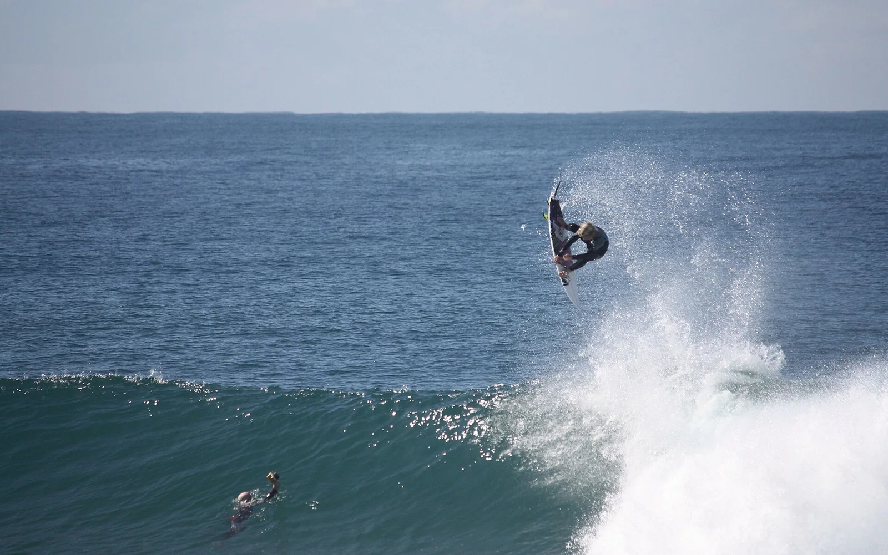

Ballito
KwaZulu-Natal, Afrique du Sud · surf

Une étape de surf de la côte nord du KwaZulu-Natal, au nord de Durban.
- Lieu
- KwaZulu-Natal, Afrique du Sud
- Niveau
- Variable selon les conditions
- Activités
- surf
- Type d'eau
- Mer / océan
- Coordonnées
- -29.54, 31.22 (position approximative du secteur)
Ouvrir dans Ocean Buddy Télécharger sur l'App Store
Source : South African Tourism.